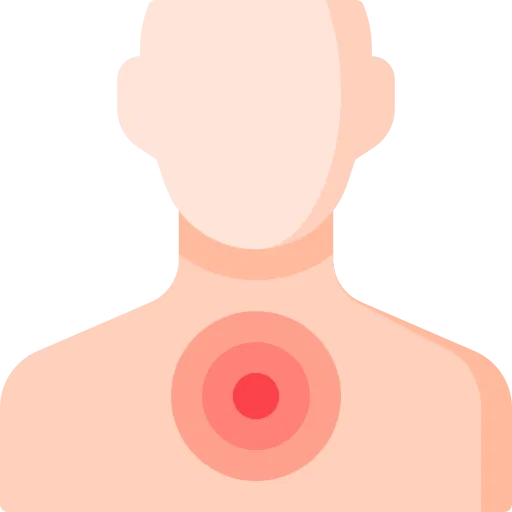

One chamber you actually watch, one movement that is normal and one that is not, and the single instruction that turns a chest tube into a tension pneumothorax.
Chest tubes look mechanical. Three chambers, some water, a suction dial. Students learn the apparatus and then miss the questions anyway.
The questions are not about the apparatus. They are about what you do when something changes. Points get lost here in three predictable ways.
Clamping feels like control. On a patient with an air leak it can kill them.
Air leaving the lung now has nowhere to go. It accumulates. Pressure builds. You have manufactured a tension pneumothorax.
Two different things happen in that chamber. The water level rising and falling is tidaling, and it is normal. Bubbles rising through the water are an air leak, and they need a source.
One means the system is working. The other means air is getting in somewhere. Confusing them means the wrong action every time.
Tidaling stopping means one of two opposite things. The lung has fully re-expanded, which is excellent. Or the system is obstructed, which is not.
You cannot tell from the chamber alone. Rule out the obstruction first, because that is the one that hurts the patient.
For every situation below, you should be able to say four things with the book closed: what you are looking at, what it means, the priority nursing action, and the mistake that makes it worse.
If you cannot say all four out loud, you do not know it yet. Familiarity is not recall.
| What you see | What it means | Priority action | The mistake |
|---|---|---|---|
| Tidaling | Water rises and falls with breathing. The system is patent and in the pleural space. | Document it and carry on. | Calling it an air leak and chasing a problem that is not there. |
| Continuous bubbling | Air is entering the system. From the patient, or from a leak in the equipment. | Find the source. Work from the patient outward. | Clamping the tube to make it stop. |
| Tidaling stops | Either the lung re-expanded, or the tube is obstructed. | Trace the tubing for kinks, clots and dependent loops first. | Assuming the good version and documenting improvement. |
| Tube pulled out | The pleural space is open to the air. | Occlusive dressing taped on three sides, then call. | Sealing all four sides, which turns it into a tension pneumothorax. |
Write these four rows on one index card, by hand. Movement without bubbles is good. Bubbles need a source. No movement needs investigating. An open chest gets three sides of tape. That card is most of the exam.
The pleural space is a potential space between two membranes. The visceral pleura covers the lung. The parietal pleura lines the chest wall. Between them sits 10 to 20 mL of serous fluid.
That space holds a negative pressure of about minus 4 to minus 8 cm H2O. The negative pressure is what keeps the lung expanded against the chest wall.
Two sheets of glass with water between them will not pull apart. The pleura works the same way.
The seal is why the lung follows the chest wall outward on every breath. Let air or fluid in and the seal breaks. The lung falls away and collapses.
A chest tube removes whatever broke the seal. That is its entire job.
| Condition | What got in | What happens |
|---|---|---|
| Pneumothorax | Air | The lung collapses as the negative pressure is lost |
| Hemothorax | Blood | The lung is compressed, and the patient loses volume |
| Pleural effusion | Serous, purulent or chylous fluid | The lung is compressed and breathing becomes difficult |
| Empyema | Pus | Compression plus a source of sepsis |
| Tension pneumothorax | Air, with a one-way valve | The mediastinum shifts and circulation fails |
Discrimination axis: air rises and fluid sinks, so the tube goes where the problem collects.
What is being drained tells you where the tube sits. It also tells you what to expect in the chamber.
Placed at the 2nd or 3rd intercostal space, midclavicular line.
Types:
Expect: an air leak at first, and very little fluid.
Placed at the 5th or 6th intercostal space, midaxillary line.
Causes:
Expect: bloody drainage, sometimes a lot of it, and usually no air leak.
| Indication | What it is | What the drainage looks like |
|---|---|---|
| Pleural effusion | Fluid from heart failure, cancer or infection | Serous or serosanguineous, variable volume |
| Empyema | Infected pleural fluid, usually after pneumonia | Thick and purulent. May need fibrinolytics |
| Chylothorax | Lymph leaking from an injured thoracic duct | Milky white, high in triglycerides |
| After thoracic surgery | Placed prophylactically after resection or cardiac surgery | Serosanguineous, with an air leak after a lung resection |
A tension pneumothorax is decompressed with a needle. Second intercostal space, midclavicular line. It happens immediately.
The chest tube comes afterwards. Waiting for a tube in a patient whose mediastinum has already shifted is waiting too long.
The unit at the bedside is three chambers in one box. You will be asked about the middle one. Far more than the other two.
Two centimetres of water is what stands between the pleural space and the room. If that chamber dries out, air can travel back up the tube and collapse the lung.
It protects the patient even when suction fails or is disconnected. That is why water seal alone is safe. Do not fill above the line either.
The height of the water column sets the suction, usually 20 cm.
Bubbling in the suction chamber is normal. Bubbling in the water seal is not the same thing.
A dial sets the level and a bellows or indicator confirms it is running.
The absence of bubbling here tells you nothing is wrong.
Below chest level is not a preference. Raise the unit above the insertion site and drainage runs backward into the pleural space.
Discrimination axis: the water level moving, versus air passing through the water.
This is the most tested pair in the topic. Both happen in the same chamber and they mean opposite things.
What you see: the water level rises and falls with each breath. Up on inspiration in a spontaneously breathing patient, down on expiration. No bubbles.
What it means: the tube is patent and sitting in the pleural space. Pressure changes are getting through.
What you do: document it and keep monitoring. This is the finding you want.
What you see: actual bubbles rising through the water seal. It may be constant, or only on coughing.
What it means: air is entering the system. Either from the patient's lung, or from a break in the equipment.
What you do: find out which. That is the whole task.
Movement of water versus air through water.
Intermittent bubbling that comes and goes with the breath is often expected. It follows a pneumothorax or a lung resection. That is the patient's own air leaving, which is the point of the tube.
Continuous bubbling that does not change with the breath is different. That leak is usually in the equipment, not the patient.
Work outward from the patient. The most common source is the least dramatic one.
The good one: the lung has fully re-expanded, and the tube may be ready to come out.
The bad one: the system is obstructed by a kink, a clot, or a dependent loop.
You cannot tell them apart by looking at the chamber. Trace the tubing from patient to unit first. If nothing is obstructed, notify the provider. Expect a chest x-ray to confirm the lung is up.
Rule out the dangerous one before you document the reassuring one.
Assess at least every 4 hours, and more often if the patient is unstable. Work the same way every time so nothing is skipped.
| Type | What it looks like | Where it comes from | What you do |
|---|---|---|---|
| Serous | Clear, straw coloured | Pleural effusion, or routine post-op | Monitor the volume. Expected. |
| Serosanguineous | Pink to light red | Post-operative, healing trauma | Normal after surgery. Watch the trend. |
| Sanguineous | Bright red | Active bleeding, hemothorax | Monitor closely. Report above 100 mL per hour. |
| Purulent | Thick, yellow-green, cloudy | Empyema or infection | Notify the provider. Cultures likely. |
| Chylous | Milky white | Thoracic duct injury | Notify the provider. Diet is usually modified. |
The expected progression after surgery is bloody, then pink, then straw coloured. Drainage that goes the other way is a finding.
This is the most tested decision in the topic. The answer is nearly always the same. Do not clamp.
A provider may also order a clamping trial before removal. Only when there is no air leak. Any clamp is brief, and the patient is watched throughout.
Cover the site immediately with a sterile occlusive dressing, usually petroleum gauze.
Tape it on three sides only. That makes a flutter valve. Air can escape on expiration through the open side, and the dressing seals against inspiration.
Tape all four sides and you have built the one-way valve that causes a tension pneumothorax. Then call for help and prepare for reinsertion.
Discrimination axis: air trapped with no way out, so the pressure pushes the mediastinum across.
Add severe distress, tachypnea and cyanosis. This is a clinical diagnosis, so do not wait for an x-ray.
If the tube is clamped, unclamp it now. Call for help. Prepare for needle decompression at the 2nd intercostal space, midclavicular line.
| Complication | What you find | What you do |
|---|---|---|
| Subcutaneous emphysema | Crepitus under the skin, swelling at the site, sometimes spreading to neck and face | Mark the borders with a pen so spread can be measured. Check tube patency. Notify the provider. |
| Obstruction | Tidaling stops, no drainage when you expected some, respiratory distress | Look for kinks and clots. Milk the tubing only if ordered. Never irrigate without an order. |
| Dislodgement | Tube visibly out, air leaking at the site, distress | Occlusive dressing taped on three sides. Call for help. Monitor. |
| Infection | Fever, redness and swelling at the site, purulent drainage, rising white count | Sterile technique on every dressing change. Notify the provider. |
| Re-expansion pulmonary edema | Cough, dyspnea and pink frothy sputum just after the lung comes back up. Rare. | Happens when a large effusion is drained too fast. Supportive care, oxygen, sometimes intubation. |
Stripping a chest tube was standard practice for decades. It is no longer recommended.
Stripping generates negative pressures around minus 400 cm H2O, which is enough to injure lung tissue. Milking, meaning gentle squeezing, generates less but is still debated.
Do it only if it is specifically ordered and a clot is suspected. The better routine is keeping the tubing free of dependent loops in the first place.
The provider removes the tube. Your job is three things. The preparation, the breath at the right moment, and the hours afterwards.
| Criterion | Threshold |
|---|---|
| Drainage | Under 150 to 200 mL in 24 hours, depending on the institution |
| Air leak | None for 24 hours or more |
| Chest x-ray | Lung fully expanded, no residual pneumothorax or significant effusion |
| Clinical status | Stable respiratory status, no distress |
| Water seal trial | Often placed on water seal without suction for some hours first, to see if the lung holds |
Pulling the tube leaves the chest wall briefly open. Let the patient inhale in that instant and negative pressure draws air in. You have made a pneumothorax.
Valsalva raises intrathoracic pressure, so air is pushed out rather than sucked in. Exhaling does the same job.
The dressing goes on immediately and stays for 48 to 72 hours.
These should be automatic. If you have to reason toward one of them, it is not learned yet.
| Number | Meaning |
|---|---|
| Minus 4 to minus 8 cm H2O | Normal pleural pressure |
| 10 to 20 mL | Normal volume of pleural fluid |
| 2 cm | Water level in the water seal chamber |
| Minus 20 cm H2O | Usual ordered suction level |
| 2nd or 3rd intercostal space, midclavicular | Tube position for a pneumothorax, because air rises |
| 5th or 6th intercostal space, midaxillary | Tube position for blood or fluid, because they sink |
| 2nd intercostal space, midclavicular | Needle decompression site for tension pneumothorax |
| Over 100 mL per hour for 3 hours | Bloody drainage that gets the provider called |
| Over 200 mL immediately | Drainage on insertion suggesting a massive hemothorax |
| Under 150 to 200 mL in 24 hours | Drainage low enough to consider removal |
| 24 hours | How long the air leak must be gone before removal |
| 5 to 7 days | Post-op air leak duration that becomes a concern |
| Every 4 hours | Minimum assessment frequency, more if unstable |
| Three sides | Tape on an occlusive dressing when the tube comes out |
| 30 minutes | How far ahead of removal to give analgesia |
| 1 to 2 hours | When the chest x-ray is taken after removal |
| 48 to 72 hours | How long the occlusive dressing stays on after removal |
| Minus 400 cm H2O | Pressure generated by stripping the tubing, which is why it is not done |
Write these on the back of the index card from section 02. Test yourself on the meaning, not the number; the exam gives you the number and asks what it means.
Reading this again will not move your score. Producing it will. Everything below is done with the page shut.
Pick any row from section 02. Without looking, say what you are looking at, what it means, the priority action, and the mistake that makes it worse.
If you can do that for all four, you are ready. If you cannot, you know exactly which section to reopen.
10 questions with full rationales covering tidaling versus continuous bubbling, clamping rules, drainage assessment, accidental dislodgement, disconnection, and removal. Choose Practice Mode for instant feedback or Exam Mode to simulate test conditions.
Tidaling is water moving with the breath, and it is normal
Bubbles in the water seal are an air leak that needs a source
Never clamp with an air leak; it makes a tension pneumothorax
No tidaling means obstruction until you have traced the tubing
Below chest level and upright, always
Over 100 mL per hour of blood for 3 hours gets reported
Tube out means occlusive dressing taped on three sides
Tracheal deviation with hypotension is a tension pneumothorax